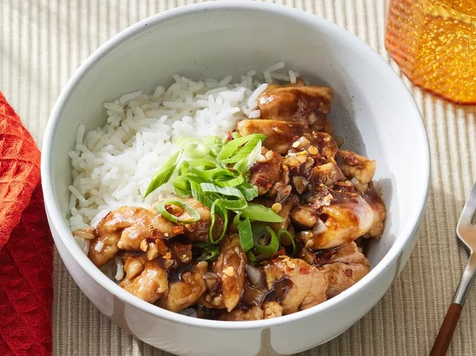

Buorbon Chicken
Home

Description
Bourbon chicken is a dish that is named after Bourbon Street in New Orleans,
Louisiana and the ingredient that gives it its bold, boozy flavor.
Ingredients
- 1 ½ pounds skinless boneless chicken thighs, cut in 1-inch pieces
- 2 tablespoons cornstarch, divided
- 2 tablespoons olive oil, divided
- ¼ cup minced onion
- 2 cloves garlic, minced
- 1 teaspoon grated fresh ginger
- 1/3 cup reduced-sodium soy sauce
- 1/3 cup reduced sodium chicken broth
- 1/4 cup bourbon (or apple juice)
- 3 tablespoons packed brown sugar
- 1 tablespoon cider vinegar
- 1/4 teaspoon crushed red pepper
- 2 cups cooked rice
- 2 green onions, sliced
Steps
- Gather all ingredients.
-
Toss chicken with 1 tablespoon cornstarch in a medium bowl.
-
Heat 1 tablespoon oil in a 12-inch skillet over medium-high
heat; add chicken. Cook and stir until browned; transfer to
a plate using a slotted spoon.
-
Heat remaining 1 tablespoon oil in same skillet. Add onion,
garlic, and ginger; cook and stir until softened and fragrant,
1 to 3 minutes.
-
Stir remaining 1 tablespoon cornstarch, soy sauce, broth, bourbon,
brown sugar, vinegar, and crushed red pepper together in a small
bowl.
-
Add sauce mixture to skillet; cook and stir until thickened and bubbly.
-
Return chicken to skillet. Cook and stir until coated in sauce and heated
through, about 2 minutes.
-
Serve over rice. Top with green onions.